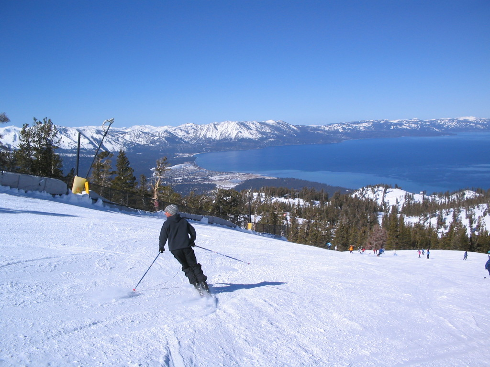

The lake was formed about two million years ago as part of the Lake Tahoe Basin, with the modern extent being
shaped during the ice ages. It is known for the clarity of its water and the panorama of surrounding mountains
on all sides.[5] The area surrounding the lake is also referred to as Lake Tahoe, or simply Tahoe. More than
75% of the lake's watershed is national forest land, being the Lake Tahoe Basin Management Unit of the
United States Forest Service.
Lake Tahoe is a major tourist attraction in both Nevada and California. It is home to winter sports, summer outdoor
recreation, and scenery enjoyed throughout the year. Snow and ski resorts are a significant part of the area's economy
and reputation.[6][7] The Nevada side also offers several lakeside casino resorts, with highways providing year-round
the entire area.
Native people
The area around Lake Tahoe was previously inhabited by the Washoe Native Americans. Lake Tahoe was the center
and heart of Washoe Indian territory, including the upper valleys of the Walker, Carson and Truckee Rivers.
Tourist activities
Much of the area surrounding Lake Tahoe is devoted to the tourism industry and there are many restaurants, ski slopes,
golf courses and casinos catering to visitors.
Winter sports

During ski season, thousands of people from all over Nevada and California, including Reno, Las Vegas, Los Angeles,
San Diego, San Francisco, and Sacramento, flock to the slopes for downhill skiing. Lake Tahoe, in addition to its
panoramic beauty, is well known for its blizzards.[6]
Lake Tahoe is the second deepest lake in the U.S., with a maximum depth of 1,645 feet (501 m),[1][9] trailing
Oregon's Crater Lake at 1,949 ft (594 m).[9] Tahoe is the 16th[10] deepest lake in the world, and the fifth deepest
in average depth. It is about 22 mi (35 km) long and 12 mi (19 km) wide and has 72 mi (116 km) of shoreline and a
surface area of 191 square miles (490 km2). The lake is so large that its surface is noticeably convex due to the
curvature of the earth. At lake level the opposing shorelines are below the horizon at its widest parts; by nearly
100 feet (30 m) at its maximum width, and by some 320 feet (98 m) along its length.[11][12] Visibility may vary
somewhat with atmospheric refraction;[13] when the air temperature is much greater than the lake temperature,
looming may occur where the lake surface or opposing shoreline is lifted above the horizon. Fata Morgana may be
responsible for Tahoe Tessie sightings.